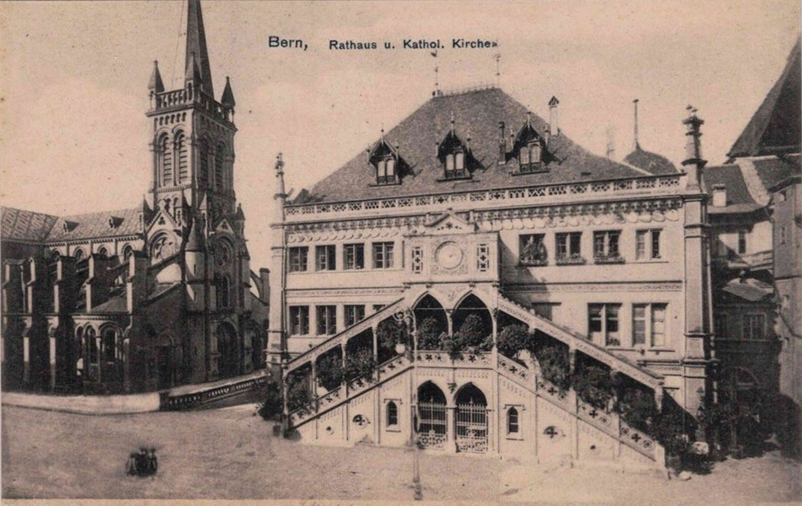
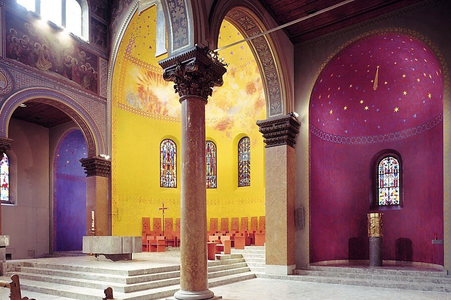

Die Geschichte der Katholischen Kirche in der Stadt Bern und damit verbunden die Geschichte katholischer Sakralbauten in Bern ist verhältnismässig jung. Etwa ein Jahrhundert, nachdem im Jahr 1421 der Grundstein für das Berner Münster gelegt wurde, und knapp ein halbes Jahrhundert, nachdem die Stadt Bern einen Vertrag mit den ersten Chorherren geschlossen hatte, tobte die Reformation auch in Bern. Nach der Berner Disputation am 27. Februar 1528 und einer Predigt des Reformators Huldrych Zwingli (1484–1531) wurde zum Bildersturm aufgerufen, Altäre wurden eingerissen und das Sakramentshaus zerstört. Von diesem Zeitpunkt an war die Ausübung des katholischen Ritus verboten.
Religionsfreiheit nach über 250 Jahren
Über 250 Jahre sollten vergehen, bis mit der Ausrufung der Helvetischen Republik 1798 in der Folge des Einfalls der napoleonischen Truppen auch die Religionsfreiheit nach Bern exportiert wurde. Philipp Albert Stapfer (1766–1840), Minister für Wissenschaften, Künste, Gebäude und Strassen in der neuen Regierung, ernannte den Franziskanerpater Père Girard (1765–1850) aus dem benachbarten (katholischen) Fribourg zum Minister des katholischen Kultus, so dass am 9. Juni 1799 in Bern der erste katholische Gottesdienst nach der Reformation gefeiert werden konnte. Schauplatz war ausgerechnet der Chorraum des reformierten Münsters, der den Katholik:innen in der Folge als Kapelle diente. Eindrücklich beschreibt Père Girard in seinen Lebenserinnerungen seine ambivalenten Gefühle beim Bezug dieses beziehungsreichen Gebäudes: «Unbeschreiblich ist der Eindruck, den dieser Raum auf mich machte, als ich ihn zum ersten Male betrat, um darin einen katholischen Altar aufzustellen. Mir schien es, ich wandle im Traum. Bevor ich aber dieser Unsumme von Eindrücken schmerzlicher und freudiger Art, die ich nicht zu fassen vermochte, entfloh, war mein Altar, den ich aus dem Marmortisch, in den ich den hl. Stein eingelegt hatte, errichtete, mit einem weissen Leinen überdeckt, mit zwei Kerzenstöcken und einem Kreuz aus Fribourg fertiggestellt.» (Egger, Lebenserinnerungen, 14)
Praktizierte Ökumene im Berner Münster
Gleichzeitig zeugt die gemeinsame Nutzung des Münsters für ein
wertschätzendes Nebeneinander von Reformierten und Katholik:innen: «Mit
Ergriffenheit denke ich an die Liebestätigkeit der Berner Bevölkerung
sowie an das feine Taktgefühl im religiösen Belangen», so Père Girard
(Egger, Lebenserinnerungen, 19).
Nichtsdestotrotz waren die
Katholik:innen, insbesondere nach dem schnellen Ende der helvetischen
Republik im Jahre 1803, in der Minderheit. Père Girard verliess die
Stadt. Die katholische Gemeinde begann ab diesem Zeitpunkt eine feste
Beheimatung zu suchen.
Die Gründung des Bundesstaats und ihre Auswirkungen auf das römisch-katholische Leben in Bern
Die Verortung der Katholik:innen als feste Grösse in der reformierten Diaspora hängt entscheidend mit der Begründung des Bundesstaates zusammen. Mit der Ernennung Berns zur Bundesstadt stieg die Zahl der Katholik:innen aus diplomatischen Kreisen sowie aus anderen Kantonen. Darüber hinaus sorgte die Zahl der Arbeitsmigrant:innen aus Italien und dem Tessin für einen Zuwachs der katholischen Gemeinde, so dass dieser schliesslich im Jahre 1853 die Erlaubnis zum Bau einer Kirche erteilt wurde. Die Kirche St. Peter und Paul in der Rathausgasse war gewissermassen das Lebenswerk von Pfarrer Antoine Baude (1805–1867), der als junger Vikar 1831 nach Bern kam und, drei Jahre nach der Einweihung des von ihm durchgefochtenen Kirchenbaus, verstorben ist.
Eine Abbildung von Seltenheitswert. Die Karte muss in den wenigen Jahren entstanden sein, in denen die Kirche St. Peter und Paul in Nachbarschaft zum Rathaus noch in Besitz der römisch-katholischen Gemeinde war.
Der Kampf um Peter und Paul
Doch auch hier sollten die Berner Katholik:innen keine bleibende Stätte
finden. Nur drei Jahre nach der Einweihung von St. Peter und Paul setzte
der Kulturkampf ein, der die Katholiken in die romtreuen
römisch-katholischen Christ:innen und die romkritischen Alt-
beziehungsweise Christkatholiken spaltete. Letztere widersetzten sich
der Unfehlbarkeit des Papstes und stellten sich damit unter den Schutz
des Staates. Nach längeren Querelen, die unter anderem mit der
kurzfristigen Verhaftung von Pfarrer Stephan Perroulaz (1811–1878)
einhergingen, weil dieser den Christkatholiken den Zutritt zur Kirche
verweigerte, übertrug die Stadt Bern der Gemeinde der Christkatholiken
die Kirche St. Peter und Paul, die bis heute dort ihren Sitz hat.
Erneut waren die römisch-katholischen Gläubigen binnen weniger Jahre
heimatlos geworden. Diesmal führte sie das Fehlen eines Versammlungsorts
bis in die Nebenräume des Gasthauses Krone in der Gerechtigkeitsgasse
64, wo man sich eine behelfsmässige Kapelle einrichtete. Entscheidend
für den Bau einer neuen Kirche war Pfarrer Jakob Stammler (1840–1925).
Seelsorger, Bauherr und Schuldenverwalter: Pfarrer Jakob Stammler (1840 – 1925)
Schritt für Schritt bewirkte er die Eintragung der Katholiken ins
Handelsregister (1883) und den Ankauf eines Grundstücks an der
Taubenstrasse (1889). Das Geld verdankte die Gemeinde dem Nachlass einer
verstorbenen Persönlichkeit. Überhaupt war man in erster Linie auf
‹fremdes› Geld angewiesen. Die Stadt Bern hat ihre Unterstützung
verweigert. Stattdessen beteiligten sich die Regierungen der überwiegend
römisch-katholischen Kantone sowie die Äbte von Einsiedeln, Engelberg
und Mariastein an den Kosten des Baus. Zu einem beträchtlichen Teil
basierte der Bau auf Bettelaktionen, Anleihen und Pfandbriefen. Wer eine
Kirchenbank finanzierte, war theoretisch dazu berechtigt, diese auf
persönlichen Wunsch wieder an sich zu nehmen.
Nachdem Pfarrer Jakob Stammler am 4. Dezember 1898 die Einsegnung der
Kirche vorgenommen hatte, erfolgte im darauffolgenden Jahr am 18. Juni
1899 – genau hundert Jahre nach dem ersten katholischen Gottesdienst
nach der Reformation – die Einweihung durch Leonhard Haas (1833–1906),
Bischof von Basel und Lugano, den Stammler wenige Jahre später im Amt
folgen sollte. Bern hatte mit der Dreifaltigkeitskirche wieder eine
römisch-katholische Kirche. Allerdings war die Gemeinde mit 250 000
Franken verschuldet.
«Über 23 Jahre war die römisch-katholische Gemeinde nach der Vertreibung
aus ihrem Eigentum für die Sonntagsgottesdienste auf fremde
Gastfreundschaft und für die Wochengottesdienste, den
Religionsunterricht und die Wohnung der Geistlichen auf die Miete in
verschiedenen Häusern angewiesen. Mit dem Bezug des eigenen Heimes sind
die Mietzinse weggefallen, dafür die ist Gemeinde mit einer grossen
Bauschuld von 250 000 belastet, eine für jene Zeit sehr bedeutsame
Summe.» (Stammler, Geschichte, o.S.)
Im Dienst der Gemeinde
Das neu geschaffene römisch-katholische Zentrum auf dem Areal der Taubenstrasse schien trotz des ‹hervorragenden Kunstsinns des Architekten› für damalige Verhältnisse sehr zweckmässig geplant gewesen zu sein, mit Räumlichkeiten für den Religionsunterricht und Wohnungen für die Geistlichen. Stammler selbst spricht von der «Einfachheit» eines «Baus für die verschiedenen Bedürfnisse der Gemeinde». Die Bauweise entspricht mit dem Hauptschiff und den zwei Seitenschiffen sowie einem Chorraum mit Apsis einer klassischen frühchristlichen beziehungsweise romanischen Basilika. 1956 wurde das Gotteshaus von Papst Pius XII. zur Basilika minor erhoben. Mit diesem Ehrentitel betont der Papst die besondere Verbindung zu Rom. Heute kann man erkennen, dass im Laufe der Jahrzehnte immer wieder Veränderungen vorgenommen worden sind, was für den Innovationsgeist der Gemeinde spricht. Einschneidende Veränderungen erfolgten nach dem Zweiten Vatikanischen Konzil im Jahre 1972. Heute besticht die Basilika vor allen Dingen durch die aussergewöhnliche Farbgestaltung des Chors und der Apsiden.
Die Dreifaltigkeitskirche Bern besticht heute durch ihre aussergewöhnliche Farbgestaltung. (Bild: Pastoralraum Bern)
Kirche leben statt bauen
Eine Besonderheit, die stellvertretend für das soziale Engagement der Dreifaltigkeit in Bern steht, ist das Gebäude der Prairie auf dem Gelände der Dreifaltigkeit, ein ehemaliges Mattengut, das 1927 in den Besitz der Dreifaltigkeit überging. Als Reaktion auf Überlegungen in den 70er Jahren, das baufällige Gutshaus abzureissen und durch einen Neubau zu ersetzen, entwickelte sich die Initiative «Chile läbe statt boue». Mit der Vorstellung von einer Kirche, die nach Kaffee duftet, der Gemeinschaft wichtiger ist als Prestige, konnte man die Mitglieder der Kirchgemeinden davon überzeugen, das Bauvorhaben mit einem Volumen von 11 Mio. Franken im Rahmen einer Abstimmung abzuschmettern. Über die Jahre entwickelte sich die Prärie in der Folge zu einem Ort, an dem obdachlose Menschen Gastfreundschaft erfahren und eine warme Mahlzeit erhalten.
Christian Geltinger ist Leiter Kommunikation für die Katholische Kirche Region Bern.
Weitere Artikel von {{ author.author }} finden Sie hier:
Beitragsbild/Einstiegsbild: Die Dreifaltigkeitskirche in Bern, erbaut 1896–1899, wurde 1956 von Papst Pius XII. (1876–1958) zur Basilika minor (Päpstlicher Ehrentitel zur Betonung einer besonderen Verbindung mit Rom) erhoben. (Foto: Dominic Hoyos)
Zur Vertiefung:
- Hanke Knaus, Gabriella u.a. (Hgg.): Katholisch Bern von 1799 bis 1999. Ein Zwischenhalt. Im Auftrag der Römisch-katholischen Gesamtkirchgemeinde Bern und Umgebung und des Dekanates Bern-Stadt, Bern 1999.
- Egger, Eugen (Hg.): «Aus den Lebenserinnerungen P. Gregor Girards, des ersten Diasporapfarrers in Bern, 1799 – 1804», in: Pfarramt der Dreifaltigkeitskirche, 150 Jahre Römisch-katholische Gemeinde Bern – 50 Jahre Dreifaltigkeitskirche, Bern 1949.
- Stammler, Jakob: Geschichte der römisch-katholischen Gemeinde in Bern, Solothurn 1901.
- Das «Offene Haus La Prairie», verfügbar unter: www.laprairiebern.ch 12.8.2024.